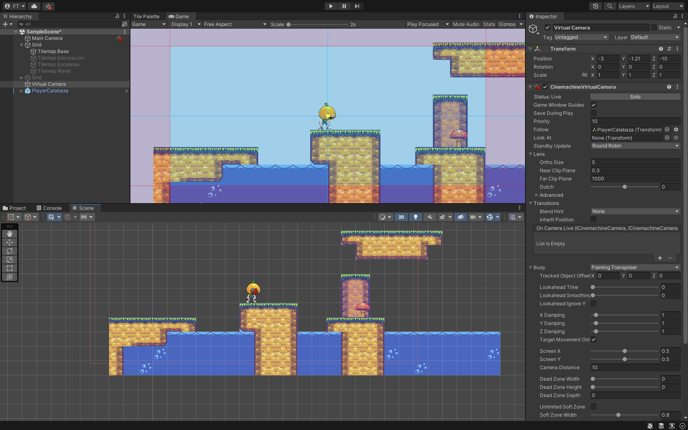
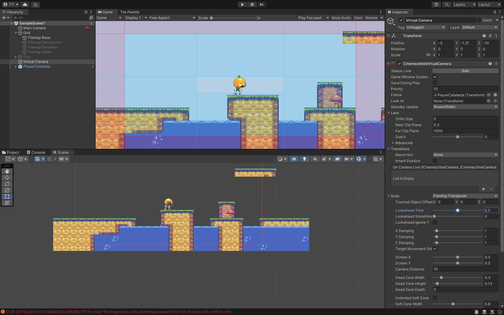
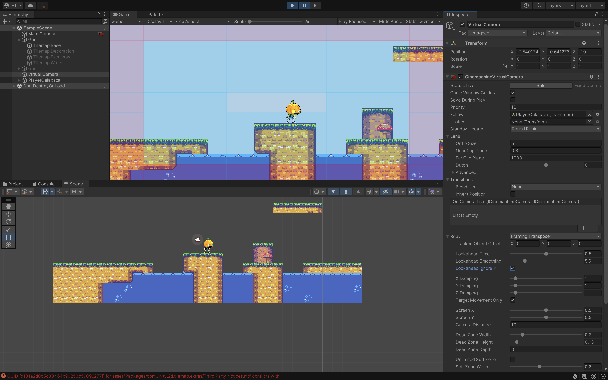

Cinemachine es una potente herramienta gratuita de Unity que permite crear sistemas de cámara complejos
y comportamientos de seguimiento dinámicos sin necesidad de escribir código. Se encarga
automáticamente de las matemáticas y la lógica del movimiento, enfoques y transiciones de cámara.
La cámara virtual tiene un componente "Follow" que sigue con la cámara el objeto asignado.
En Game para que aparezcan una zonas azules y rojas tenemos que desplegar la opción de Body.

En la Camara Virtual tenemos un componente CinemachineVirtualCamera y hay un atributo Body que veremos
las opciones más importantes:
• Damping: Para que la cámara nos siga con una pequeña sensibilidad. Si lo ponemos a 0 vendrá
directamente a nuestro player.
• ScreenX y ScreenY: Para centrar la cámara a nuestro personaje más arriba/abajo ó más a la
izquierda/derecha.
• Dead Zone Witdth y Height: Aparece un cuadradito pequeño que es como mi zona de confor
(zona muerta), se puede minimizar el tamaño para que me mueva y la cámara no se mueve en esa zona,
pero si me salgo de ese cuadrado la cámara me seguirá.

• LookaheadTime: Si me muevo rápido hacia la derecha o hacia la izquierda puedo tener muy poco
margen de visión. Lo podre mejorar. Lo que hará es poner el punto amarillo que aparece sobre nuestro
Player nos lo pondrá más adelante (hacia la izquierda o derecha). La cámara prevé ese movimiento y
se va a centrar mejor para que podamos ver la parte derecha o izquierda.
• LookaheadSmoothing como de abrupto es el movimiento hacia la izquierda o hacia la derecha.
Lo ponemos a 5.6 y así tendré más margen de visión.
• LookaheadIgnoreY: También podremos ignorar la Y.

Con esto conseguimos que no se vea el espacio vacío que nos queda.
Nos pide un Shape 2D. Asi que haremos lo siguiente:
• Crear un GO vacio lo llamaremos MapConfiner lo reseteamos y lo colocamos.
o Con un componente Polygon Collider 2D. Le modificamos al tamaño de nuestro
TileMap.
• Y arrastrarlo al parámetro de Bounding Shape 2D de la cámara virtual.
Cuando ejecutamos vemos que el personaje se va fuera. Poner IsTrigger a true el componente del
MapConfiner.